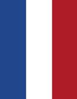

|
|

چند همسری
درخواست حزب هلندی برای ممنوعیت ازدواج اسلامی
فردا نیوز
دو شنبه6 خرداد 1387
حزب کار هلند خواستار الغای قوانین ازدواج به شیوه مسلمانان در این کشور و الزام مسلمانان به ازدواج مدنی مطابق قانون هلند شد.
به گزارش سرویس بین الملل «فردا» و به نقل از الوطن گورین دایل بلوم، یکی از اعضای این حزب گفت: ازدواج اسلامی راهی است برای تعدد زوجات که مخالف قوانین هلند است.
وی افزود: علاوه بر این، این نوع ازدواج راهی است برای ازدواج سیاه!یعنی اینکه مرد مسلمان می تواند یکبار با یک زن مسلمان ازدواج کند تا بنابر تعلیمات اسلام نصف دینش حفظ شود و یکبار هم با یک زن هلندی ازدواج می کند تا اقامت بگیرد!
گورین به این اکتفا نکرد و با ربط دادن بین ازدواج اسلامی و تروریسم گفت: گروههای تروریستی و افراطی از جمله گروهکی که در سال 2005 بوسله نیروهای امنیتی از بین رفت از این ازدواج بین مسلمانان در جهت منافع خود سوء استفاده می کنند!